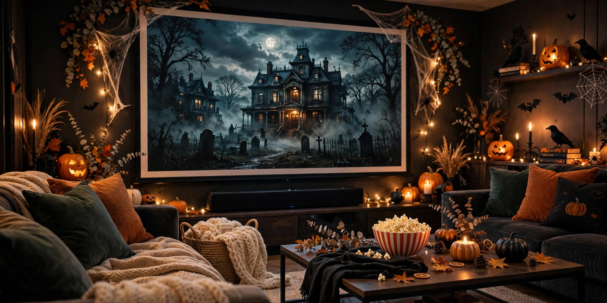

Halloween Movie Night at Home 2026: Snacks, Setup and Movie List
Published October 9, 2026 · Updated October 9, 2026 · By EventBuzz Team

No queues, no sticky cinema floor, no ticket prices — a Halloween movie night at home gives you the best seat in the house and a snack table you control. Halloween 2026 falls on Saturday, October 31, so you can start early with a gentle family film and still have time for a genuinely scary late feature. This guide covers the setup step by step, 20+ snack ideas, and a movie list sorted by age and scare level.
Step-by-Step Setup: Screen, Sound, Light and Seats
You can build a great movie room in about 30 minutes, mostly with things you already own.
Step 1: The Screen — TV or Projector?
Use your TV (free and foolproof). Turn off "motion smoothing" in the picture settings so films look like films, and set brightness for a dim room. A 40-inch+ screen feels cinematic from a sofa 2 metres away.
Projector (the cinema upgrade). A basic projector on a blank wall or hung bedsheet gives an 80–120 inch picture that makes haunted houses feel huge. You need a room you can darken, about 2.5 metres from wall to projector. Test focus and streaming apps the day before — never five minutes before guests arrive.
Streaming check: open every film in advance, confirm it plays, download where allowed,. Buffering kills a jump scare.
Step 2: Sound Without Waking the Street
- Soundbar: the best single upgrade. Centre it under the TV and use "night" or dialogue mode if voices get buried under music.
- TV speakers: fine for family films. Turn on subtitles — they help kids and anyone hard of hearing follow whispered scenes.
- Headphones for the late feature: after 10 PM, wireless headphones or earbuds keep the screams in the room and the neighbours happy. Many TVs support two Bluetooth pairs, or use a cheap splitter.
Step 3: Lighting — Spooky but Safe
Aim for dim and warm — never pitch black (people need to find their snacks) and no open flames near paper decorations or costumes. Light the room with:
- LED candles in pumpkins and on the snack table — flickering and safe around children and curtains.
- Warm fairy lights along a shelf or the screen frame, .
- One real candle, max, in a jar away from walkways, never left unattended.
Step 4: Seating — Build the Floor Nest
Put adults on the sofa, then build a floor nest in front: a duvet or thick blanket on the carpet, big cushions and beanbags, and one blanket per person (sharing ends in a tug of war). Give every seat a tray or side table for drinks, and keep a clear path to the kitchen and bathroom.
Quick Room Checklist
- Screen tested, films queued, remote batteries checked
- Sound tested at night volume
- LED candles placed, standby lights covered
- Floor nest built, one blanket per person
- Snack table stocked, napkins and bin nearby
- Phones on silent, chargers in another room
Snacks: 23 Ideas in Four Groups
Movie snacks should be quiet to eat, easy to handle in the dark, and mostly finger food. Here are 23 ideas.
Sweet (1–6)
- Pumpkin-bowl popcorn: salted popcorn in hollowed mini pumpkins or jack-o'-lantern bowls.
- Candy corn trail mix: candy corn, peanuts, pretzels and chocolate pieces.
- Caramel apple slices: wedges on sticks with warm caramel dip; slice last minute.
- Ghost bananas: banana halves with chocolate-chip eyes. Five minutes, no cooking.
- Witch hat cookies: chocolate cookies with a chocolate kiss fixed on by orange icing.
- Hot chocolate bar: cocoa with marshmallows and cream; keep a flask full for intermission.
Savoury (7–12)
- Mummy hot dogs: cocktail sausages in crescent-dough strips, baked 12 minutes, mustard-dot eyes.
- Spider web nachos: chips and cheese sauce with a piped sour-cream web.
- Monster popcorn: popcorn with green or orange candy melt and candy eyes.
- Cheese broomsticks: pretzel sticks pushed into string-cheese "bristles". Two ingredients.
- Mini pizzas: muffin pizzas with black-olive spiders; 10 minutes in the oven.
- Devilled egg eyeballs: devilled eggs with an olive "iris" and hot-sauce veins.
Healthier Picks (13–17)
- Tangerine pumpkins: peeled tangerines with a tiny celery stem.
- Veggie skeleton: cucumber, pepper and carrot "bones" around a dip skull.
- Apple "teeth": wedges sandwiched with nut or seed butter and marshmallow teeth.
- Roasted pumpkin seeds: from your carved pumpkins; salt, oil, 20 minutes in the oven.
- Fruit kebabs: melon and grape skewers with ghost picks.
Halloween-Themed Showpieces (18–23)
- Graveyard pots: chocolate pudding cups with cookie-crumb "soil" and a biscuit headstone.
- Blood-red punch: cranberry-raspberry juice with lychee-and-blueberry "eyeballs".
- Witches' brew popcorn: popcorn with purple and green candy drizzle, served cauldron-style.
- Frankenstein treats: green crispy rice squares with chocolate hair and candy eyes.
- Pumpkin cupcakes: orange icing and a pretzel-stick stem; box mix is fine.
- Cauldron fondue: slow-cooker chocolate with fruit, marshmallows and pretzels for the late feature.
Drink note: put water out from the start — between candy and popcorn, it is the drink everyone actually finishes.
Movie List by Age and Scare Level
Ratings vary by country, so treat this guidance as a starting point and always check your local rating. If unsure, preview the scariest scenes yourself the day before.
Young Kids (Ages 3–6): Gentle and Silly
- It's the Great Pumpkin, Charlie Brown — cosy classic, zero scares, under 30 minutes.
- Room on the Broom — a kind witch and a muddy dragon; warm and short.
- Spookley the Square Pumpkin — a sweet story about being different.
- Curious George: A Halloween Boo Fest — mild mystery, nothing nightmare-shaped.
Family (Ages 7+): Spooky Fun, Happy Endings
- Hocus Pocus — three comic witches in modern Salem; the definitive family Halloween film.
- Hotel Transylvania — monsters as heroes; fast, silly and kind.
- Casper — a friendly ghost; gentle, with a few emotional moments.
- The Addams Family (1991) — deadpan comedy about cinema's most loving weird family.
- Beetlejuice — inventive ghost comedy; a few crude jokes, best 9+.
- Ghostbusters (1984) — light scares and one very large marshmallow.
Tweens and Teens: Real Chills, Training Wheels On
- Coraline — eerie stop-motion; button eyes unsettle tweens just enough.
- The Nightmare Before Christmas — Halloween meets Christmas; a perfect bridge title.
- Gremlins — cute pet, strict rules, chaotic comic horror.
- Goosebumps — the books brought to life; spooky, no gore.
- Scary Stories to Tell in the Dark — genuinely creepy; best 13+.
- A Quiet Place — near-silent suspense for older teens; almost no gore.
Horror Fans (Adults, Late Night): The Real Thing
- Halloween (1978) — the original slasher blueprint; lean and terrifying.
- Scream — self-aware slasher; violent, funny, great with a group.
- The Conjuring — haunted-house horror built on slow, atmospheric scares.
- Get Out — a social thriller sliding into horror; endlessly discussable.
- It — a clown, a small town, a superb young cast.
- Hereditary — for the bravest only; dread that stays with you.
Double-Feature Schedules That Actually Work
The Family-to-Fright Night (Best for Mixed Ages)
- 5:30 PM — arrivals and snack table
- 6:00 PM — Feature 1 (family): Hocus Pocus or Hotel Transylvania
- 7:45 PM — intermission: hot chocolate and a stretch
- 8:15 PM — younger kids to bed, or colouring in a quiet room
- 8:30 PM — Feature 2 (teens/adults): Scream or The Conjuring
- 10:30 PM — fondue, leftover candy, best-scene debates
The All-Family Double (Nobody Goes to Bed Scared)
- 5:00 PM — starters: It's the Great Pumpkin, Charlie Brown and Room on the Broom
- 6:30 PM — snack refill
- 7:00 PM — main feature: Casper or The Addams Family
- 8:45 PM — pumpkin seeds and hot drinks to wind down
Budget Tips: Cinema Feel, Sofa Prices
- Screen: use the TV you own. Renting or borrowing a projector for the weekend usually costs less than a family cinema trip.
- Films: check your existing subscriptions first. Libraries lend DVDs and often free streaming — a great source for classics like Halloween.
- Snacks: buy kernels, candy and drinks in bulk. Two themed "showpiece" snacks plus simple basics beat ten complicated recipes.
- Decor: LED candles and fairy lights now, reused at Christmas. Paper bats and a bedsheet ghost cost almost nothing.
- Seating: the floor nest is free — borrow cushions from bedrooms instead of buying beanbags.
Frequently Asked Questions
What time should a Halloween movie night start?
Start the family feature around 6:00 PM so young kids finish before bedtime, then begin the scarier second feature at 8:30 to 9:00 PM after an intermission. Saturday, October 31, 2026 has no school-night pressure, but early starts keep the night relaxed.
What are the best snacks for a Halloween movie night?
Mix sweet, savoury, healthy and themed options: popcorn in pumpkin bowls, candy corn trail mix, mummy hot dogs, apple slices with caramel dip, and ghost bananas. Aim for finger foods that need no cutlery, plus water alongside the sugary drinks.
What Halloween movies are suitable for young children?
Gentle picks for young kids include It's the Great Pumpkin, Charlie Brown, Room on the Broom, Spookley the Square Pumpkin and Hotel Transylvania. They are funny rather than frightening, but always check your local rating and preview any film you are unsure about.
Is a TV or a projector better for a home movie night?
A TV you already own is free, bright and reliable, and suits most living rooms. A projector gives a bigger, more cinema-like picture if you have a blank wall and can dim the room. Renting a projector for one weekend often costs less than buying one.
How can I host a Halloween movie night on a small budget?
Use the TV and subscriptions you already have, borrow films from the library, buy snacks in bulk, make popcorn at home, and reuse LED candles and fairy lights at Christmas. Most great movie nights cost little beyond the food.
How do I handle different scare levels with mixed ages?
Run a double feature: a gentle family film early, a break while younger children go to bed or move to a quiet room, then the scary film for teens and adults. Announce the plan in advance so nobody feels trapped.
Conclusion
A great Halloween movie night is three things done well: a screen that works, snacks within reach, and the right film for the people on your sofa. Set up on Saturday afternoon, press play at six, and let the night end with the bravest viewers arguing over the best scare. Plan the rest of your Halloween with our guides:
Dim the lights, pass the popcorn — and if something knocks during the quiet scene, it is probably just the cat.
Halloween Party Picks
Costumes, decorations and party essentials to make your Halloween 2026 unforgettable.


Prices shown at the time of publishing and can change. Links take you to AliExpress, where shipping and delivery details are shown.